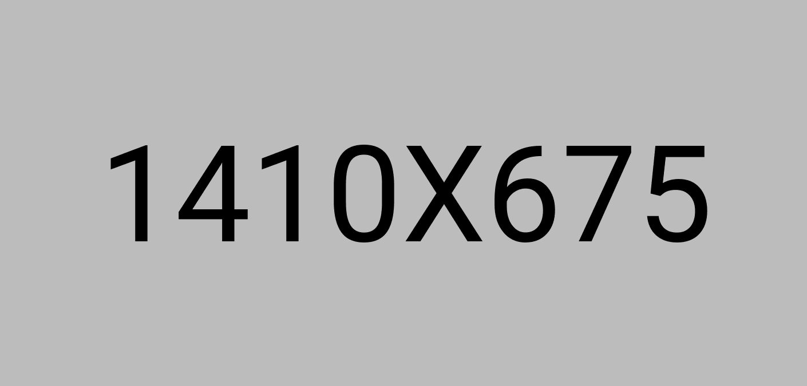
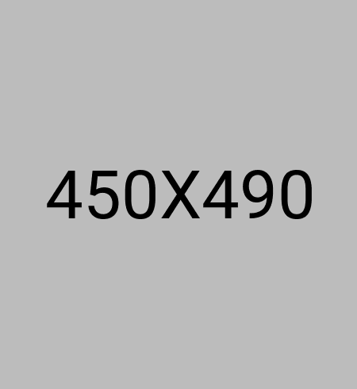

פתרונות עיצוב ופיתוח אתרים
הדף הזה מציג דוגמה לפרויקט מלא: אפיון חוויית משתמש, עיצוב ממשקים והטמעה בקוד. אנחנו מתחילים מהבנת הצרכים, בונים היררכיית מסכים ברורה ומוודאים שהאתר נראה ומרגיש טוב בכל מכשיר.
בשלב הפיתוח שומרים על קוד קריא, רכיבים לשימוש חוזר ובדיקות לפני עלייה לאוויר. המטרה היא מוצר דיגיטלי מהיר, נגיש וקל לתחזוקה - עם דגש על תוכן ברור ויחס אנושי למבקרים. בפרויקטים דומים אנו מתאימים את העיצוב לשפת המותג, מגדירים מדדי הצלחה ומלווים את הלקוח עד לתוצאה יציבה לאורך זמן.
מידע על הפרויקט
עיצוב אתרים
דנה כהן
25 במרץ 2022
רחוב ראשי 75, תל אביב



סיכום הפרויקט
בחלקים האחרונים של הפרויקט ריכזנו את הלמידה מהעבודה השוטפת: מה עבד טוב אצל המשתמשים, אילו מסכים דרשו כיוונון ואיך ניתן להרחיב את המערכת בעתיד. שקיפות מול הלקוח, סדר בבעלות על התכנים והחלטות מוצר מבוססות נתונים הם חלק מרכזי מההצלחה. בסיום מוודאים שמסמכי ההעברה ברורים, שתחזוקה שוטפת אפשרית ושיש בסיס טכני שמאפשר להוסיף יכולות חדשות בלי לשבור את מה שכבר עובד. כך נשמרים איכות, מהירות ובטחון בשימוש ארוך טווח.